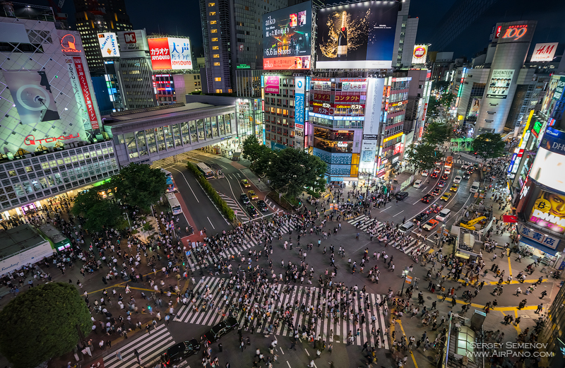
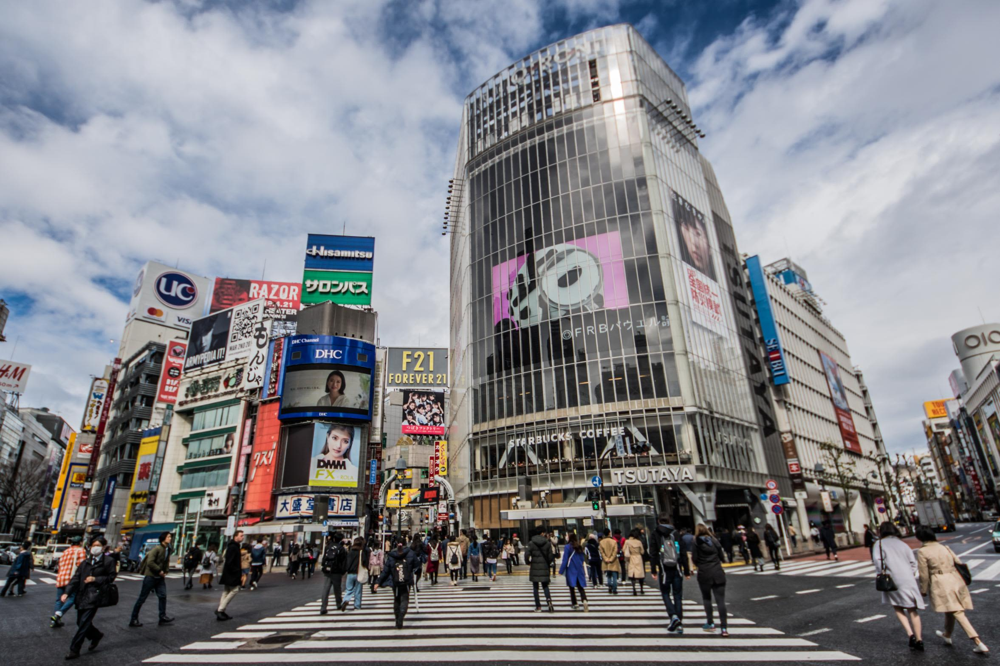
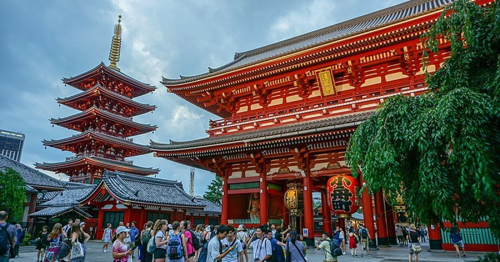
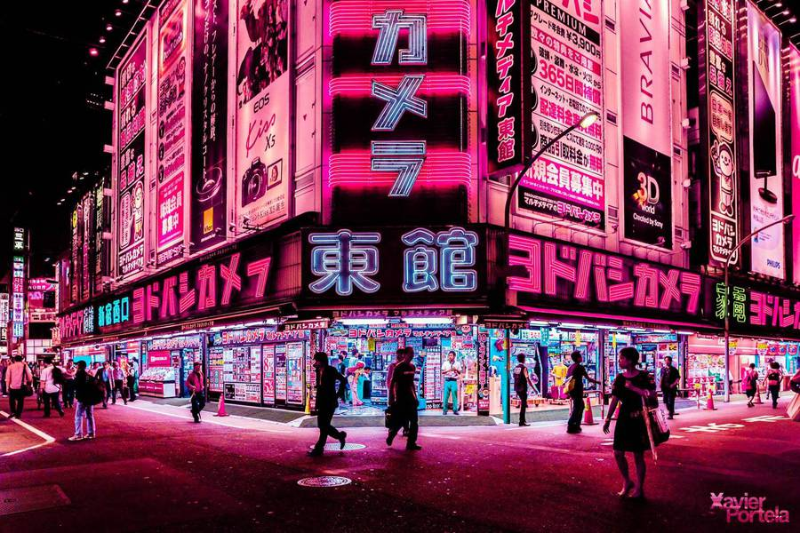
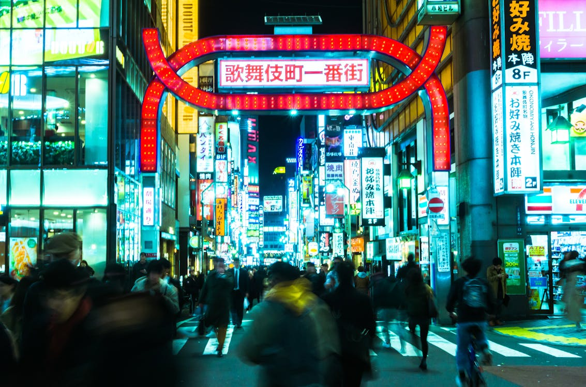
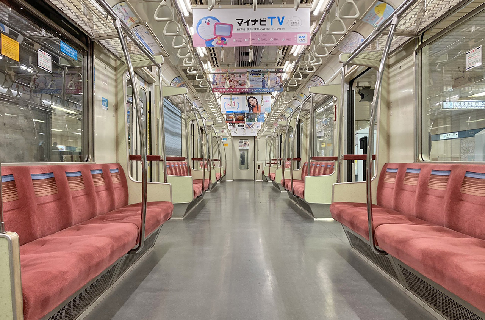

Streets of Tokyo: Diving into the Neon Chaos and Culinary Delights

Tokyo, the pulsating heart of Japan, is a city where ancient traditions collide with cutting-edge innovation. My exploration of its streets was a sensory overload—neon lights flashing, crowds bustling, and aromas of street food wafting through the air. From the iconic Shibuya Crossing to hidden alleyways in Asakusa, Tokyo's streets tell stories of resilience, creativity, and endless energy. This metropolis isn't just a destination; it's an experience that redefines urban adventure.
Arrival and First Impressions in Shinjuku
Landing at Narita Airport, I was whisked into Tokyo's efficient rail system, the JR lines that connect the city like veins. My first stop was Shinjuku, a district that epitomizes Tokyo's scale. The Shinjuku Station handles millions daily, and stepping out into the neon-lit streets felt like entering a sci-fi novel. Towering skyscrapers like the Tokyo Metropolitan Government Building offered panoramic views, while the Kabukicho entertainment district buzzed with energy after dark.
The city's cleanliness and order were striking— no litter, polite crowds, and vending machines selling everything from hot meals to umbrellas. Yet, beneath the modernity, hints of tradition peeked through, like the serene Shinjuku Gyoen gardens amidst the concrete jungle.
The Iconic Shibuya Crossing

No visit to Tokyo is complete without Shibuya Crossing, the world's busiest pedestrian scramble. Standing at the edge, I watched as thousands crossed simultaneously when the lights changed—a symphony of humanity in motion. The surrounding streets were a feast for the eyes: massive billboards, trendy shops, and cafes spilling onto sidewalks.
Exploring the area, I discovered Shibuya's youth culture in Harajuku, with its quirky fashion boutiques and Takeshita Street's vibrant energy. The contrast between orderly crossings and chaotic shopping alleys highlighted Tokyo's dual nature.



Cultural Gems in Asakusa and Beyond
Venturing to Asakusa, I immersed myself in Tokyo's historical side. The Senso-ji Temple, Tokyo's oldest, was a serene oasis. Walking through the Nakamise Shopping Street, lined with traditional snacks and souvenirs, I felt the city's spiritual roots. The temple's incense and chanting monks provided a meditative counterpoint to the city's hustle.
Further explorations included Akihabara's otaku culture—arcades, anime shops, and maid cafes—and the tranquil Meiji Shrine, where ancient forests surround a Shinto sanctuary. These streets revealed Tokyo's blend of old and new, where technology meets tradition.
The Culinary Wonderland
Tokyo's streets are a food lover's paradise. From Tsukiji Outer Market's fresh sushi to ramen stalls in Shinjuku, every corner offered delights. I indulged in conveyor-belt sushi, where plates whizzed by, and street-side yakitori skewers grilled to perfection. The Tsukiji experience—haggling for the freshest tuna—was unforgettable.
Dining in izakayas (pub-like eateries) introduced me to sake pairings and small plates. Tokyo's food scene isn't just sustenance; it's an art form, with chefs elevating simple ingredients to masterpieces.
Pro Tip: Visit Tsukiji early for the tuna auctions. Use translation apps for menus, and don't miss omakase (chef's choice) sushi for an authentic experience.
Modern Marvels and Nightlife
Tokyo's streets come alive at night. In Roppongi, clubs and bars pulsed with energy, while Ginza's upscale avenues glittered with luxury. The city's efficient subway and taxis made navigating effortless, even in the rain.
Technological wonders abounded—from robot restaurants to high-tech toilets. Yet, the human element shone: friendly locals offering directions and shared smiles in crowded trains.



Challenges and Cultural Insights
Navigating Tokyo's streets taught me about "omotenashi" (Japanese hospitality) and the importance of harmony. Crowded trains required patience, and language barriers were overcome with gestures and apps. The city's efficiency was impressive, but it also highlighted the pressure of urban life.
Encounters with locals— from tea ceremonies to karaoke sessions—revealed a culture of respect and innovation. Tokyo isn't just visited; it's experienced through its people.
Travel Tips for Your Tokyo Adventure
- Best Time: March-May or September-November for cherry blossoms or autumn leaves.
- Getting Around: Use a JR Pass for unlimited travel; apps like Hyperdia for planning.
- Cultural Etiquette: Bow when greeting, remove shoes indoors, and queue patiently.
- Budgeting: $100-200/day; street food keeps costs low.
- Safety: Tokyo is one of the safest cities—enjoy the freedom.
Tokyo's streets are a gateway to Japan's soul. Dive in, get lost, and let the city surprise you. It's chaotic, beautiful, and utterly unforgettable.
Back to Blog